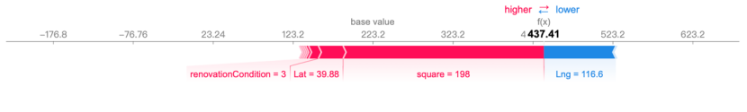
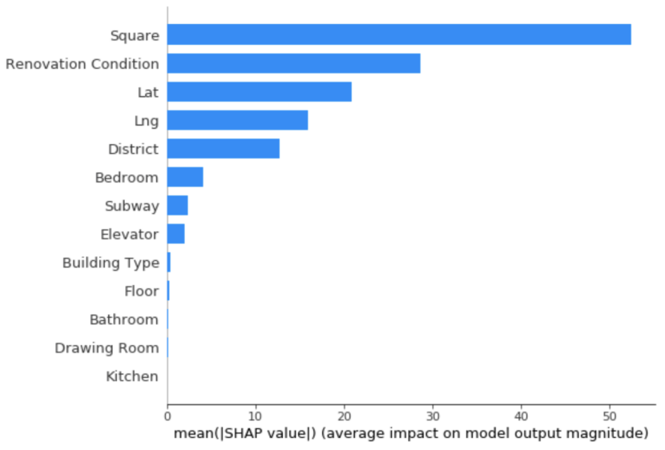
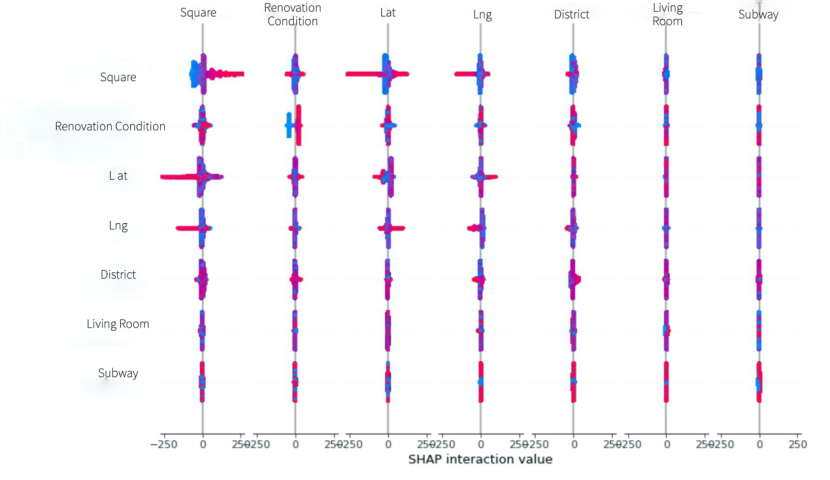

The goal of SHAP is to explain the judgment result of the model by calculating the contribution of each feature in the train set to Prediction through SHAP VALUE.
|  | This figure shows the different influences of different features on the predicted results of the model.
Red indicates a positive contribution of a given feature to the prediction, and blue indicates a negative contribution. Base value is the base price. The longer the price deviates from the Base value, the greater the influence of this feature on the predicted price. In this example, the feature square has the greatest positive effect on the predicted price, while longitude (Lng) has the greatest negative effect on the predicted price. |
| This chart shows the influence of each feature on the predicted result (target) through the average of SHAP VALUE.
From this figure, we can see that among the features selected, the square of the house has the greatest influence on predicting the housing price, while the number of kitchens and Drawing rooms has very little influence on predicting the housing price. |
 |
| This graph shows the effect of the value of each feature on the predicted result.
The blue points in the figure indicate that the value of the eigenvalue is small, while the red points indicate that the point of the eigenvalue is large. We find that for the feature of square, the red dots are mainly distributed in areas with SHAP value greater than 0, while the blue dots are mainly distributed in areas with SHAP value less than 0. This indicates that the larger the housing area is, the greater the positive impact on the predicted price, while the smaller the area is, the greater the negative impact on the predicted price. As for the Floor feature, the blue points are mainly distributed in the area where the SHAP value is greater than 0. This means that in our model, the smaller the Floor of a house, the greater the positive impact on the house price. |
| This figure shows the influence of the interaction between different features on the predicted results.
In the case of multiple features interacting, red dots represent large eigenvalues and blue dots represent small eigenvalues. The positive and negative distribution of SHAP value respectively represents the positive and negative influences on the predicted results. |
 |
|
These images show the SHAP values of each feature in different value intervals.
Data in the positive range of SHAP value will have a positive impact on the predicted result, while data in the negative range of SHAP value will have a negative impact on the predicted value. From these figures, we can see the influence of each feature on the predicted results in different data intervals. * Move the mouse over the picture to see the name of each feature. |